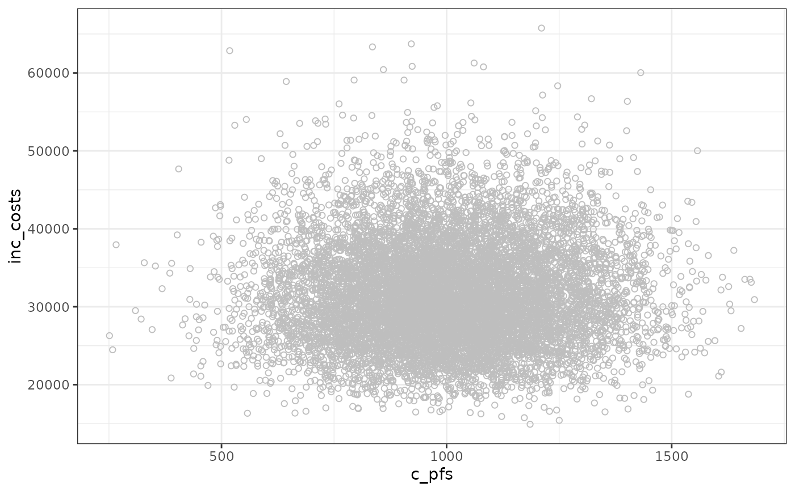

This function plots the distribution of two parameters in a scatterplot.
Arguments
- df
a dataframe.
- param_1
character. Name of variable of the dataframe to be plotted on the x-axis.
- param_2
character. Name of variable of the dataframe to be plotted on the y-axis.
- slope
numeric. Default is NULL. If different than 0, plots a linear line with a user-defined intercept and the defined slope.
- intercept
numeric. Default is 0. Intercept of the user-defined slope.
- check
character. Default is NULL. When set to "param_2 > param_1". The dots fulfilling the condition are coloured in red.
- fit
character. Designate the type of smooth model to fit to the relation of `param_1` (x) and `param_2` (y). It can take the values "lm, "glm", "gam", and "loess". A model will be fitted according to the methods described in
ggplot2::geom_smooth().
Examples
# Generating plot for the costs of progression-free health state versus incremental costs
data(df_pa)
vis_2_params(df = df_pa, param_1 = "c_pfs", "inc_costs")
